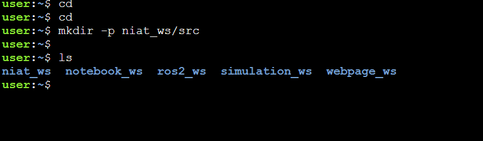

Welcome to “How Robots Move”, an interactive and engaging class designed to demystify the fascinating world of robotic locomotion.
By the end of this class, you will:
First, clone the NxtBot simulation repository to your rosject workspace in the terminal.
git clone https://github.com/niat-robotics/simulation_ws.git
Master these essential terminal shortcuts to navigate, interrupt, and manage processes efficiently while working with NxtBot.
| Shortcut | Description |
|---|---|
Ctrl + C | Terminates the currently running process (e.g., stop a node or simulation). |
Ctrl + Shift + C | Copies selected text or commands from the terminal. |
Ctrl + Shift + V | Pastes copied text or commands into the terminal. |
Ctrl + L / clear | Clears the terminal screen for better visibility. |
↑ / ↓ | Scrolls through command history to quickly re-run previous commands. |
Your toolkit of Linux and ROS 2 commands — essential for workspace setup, building packages, and launching NxtBot simulations.
| Command | Description |
|---|---|
cd | Changes the current working directory. |
mkdir | Creates a new directory within the current folder. |
ls | Lists all files and directories in the current path. |
source /opt/ros/humble/setup.bash | Loads ROS 2 environment variables before executing any command. |
source install/setup.bash | Activates the local workspace after a successful build. |
colcon build --symlink-install | Builds all ROS 2 packages in the workspace. |
ros2 launch <package name> <file.launch.py> | Launches a predefined simulation or bring-up configuration. |
ros2 run <package name> <node name> | Runs a specific ROS 2 node from a package. |
Use the following command to build the simulation_ws:
cd ~/simulation_ws
colcon build --symlink-install

You may see this colcon build output.
Before sourcing the workspace and launching the simulation, open the Gazebo client.
Now source the simulation_ws and launch simulation.launch.py:

source install/setup.bash
ros2 launch tortoise_bot simulation.launch.pyThis command initializes the warehouse environment, allowing the robot to operate within a simulated space. It will take about 2–3 minutes to launch the Gazebo world.
Always run source /opt/ros/humble/setup.bash before executing any ROS 2 command, and source install/setup.bash after every successful build to activate your workspace properly.

open the gazebo window in the new tab


In Gazebo, you can control the simulation view using the mouse and keyboard shortcuts. These camera controls help you analyze your robot’s movements from different angles and perspectives.
Gazebo allows you to switch between different visual perspectives to analyze your robot’s surroundings more effectively:
Below is where show sample camera views (Top, Perspective, Orthographic).

While running simulations, use the Top View to easily monitor your robot’s movement trajectory, wheel alignment, and sensor field overlaps.
The Gazebo simulation might not start properly on the first try or if the gazebo closes suddenly. If this happens, restart the simulation by following these steps:
Ctrl + C in the terminal where you launched it.cd ~/simulation_ws
source install/setup.bash
ros2 launch tortoise_bot simulation.launch.pyIf the Gazebo window closes unexpectedly, just reopen it and re-run the same commands above to resume your simulation.
Before diving into automation and sensor-based navigation, it’s essential to familiarize yourself with manual control. Teleoperation allows you to manually control the robot using keyboard inputs, providing a hands-on understanding of its movement capabilities.
/cmd_vel — Linear & Angular Velocities
In ROS 2, the topic /cmd_vel (short for command velocity)
is the standard channel used to control a robot’s movement. It carries messages of type
geometry_msgs/Twist.
This message defines how fast the robot moves forward/backward and how quickly it turns.
Twist Message Structurem/s (meters per second) and rad/s (radians per second).These two together define a twist motion, i.e., translation + rotation — the essence of differential drive control.

source /opt/ros/humble/setup.bash
export TURTLEBOT3_MODEL=burger
ros2 run turtlebot3_teleop teleop_keyboardAfter successfully launching the teleoperation node, use the keys below to navigate the robot inside the warehouse simulation environment:
Moving Around:
Space or S → Force Stop
Ctrl + C → Quit Teleoperation
Use gentle, short key presses to control the robot’s movement smoothly. Avoid holding keys for too long, as this may cause overshooting or collisions in confined spaces.
If the robot collides with walls, gets stuck, or behaves erratically:
Ctrl + C immediately to stop the teleop_keyboard node in the terminal window.Ctrl + R to reset the robot’s position and environment or If ctrl +R is not working click on edit on the top menu bar and click on reset world .
This will safely reset the simulation and prepare the robot for another teleoperation attempt.
▲ Watch the robot execute linear and angular velocity commands in the simulation environment.
By the end of this class, you will be able to:
Before diving into perception tasks, we need to set up our ROS2 environment and the NxtBot simulation.
Before launching the NxtBot simulation again. Press Ctrl + C in the Teleoperation terminal where it is running to safely terminate the process and run the next simulation.
Next,Press Ctrl + R to reset the robot’s position and environment or If ctrl +R is not working click on edit on the top menu bar and click on reset world .
Once reset, proceed to the next step to launch the NxtBot simulation.
RViz2 is a powerful visualization tool in ROS2 that allows us to see the data being published by the robot’s sensors.
Now open another terminal and execute the following command:
cd ~/simulation_ws
source install/setup.bash
rviz2Let’s bring your robot to life in RViz2! You’ll learn how to visualize:
/robot_description)/camera/image_raw)/scan)Follow these steps to set up and visualize your robot in RViz2.
After launching RViz2 in the terminal, the interface will look like this:

Select base_link as the fixed frame.

Click on the Add button in the bottom-left corner to include a new topic.

Add the RobotModel from By Display Type and click OK.

Expand RobotModel and select the /robot_description topic to see your robot.

🌐 Step 5 – Add the Laser Scan Topic
/scan.

Add the Image topic and set it to /camera/image_raw to see what your robot sees.

✅ Once all topics are added, your RViz2 setup should display the robot model, camera feed, and laser scan data seamlessly.

Launch a new terminal window (top right corner of the terminal panel).
Teleoperation Command:
Execute in Terminal:
source /opt/ros/humble/setup.bash
export TURTLEBOT3_MODEL=burger
ros2 run turtlebot3_teleop teleop_keyboardNow start controlling the robot using Teleoperation Keyboard and observe what your robot sees in RViz2 through the Camera feed and Laser scan topics.
▲ Watch the robot executing teleoperation in the simulation environment and visualize RViz2 through the Camera feed and Laser scan topics.
Before we start coding, ensure that you have the NxtBot simulation environment set up and running. You should have access to the following ROS 2 topics:
sensor_msgs/LaserScan) which indicates distances to obstacles around the robot.geometry_msgs/Twist) to control the robot’s velocity.Ctrl + R to reset the robot’s position and environment or If ctrl +R is not working click on edit on the top menu bar and click on reset world .
Once reset, proceed to the next step to launch the NxtBot simulation.
First, we will create a ros2_ws. Run this command in the terminal:
cd
mkdir -p niat_ws/src
cd niat_ws/src
ros2 pkg create --build-type ament_python obstacle_avoidance
To verify, run ls and ensure the package appears:

laser_obstacle_avoidance.py in the New Package
Navigate to the obstacle_avoidance package directory:
cd obstacle_avoidance/obstacle_avoidance/Inside this directory, create a Python script named laser_obstacle_avoidance.py:
touch laser_obstacle_avoidance.pyAfter running the command, the Python file will be created at the following path:

Now that the laser_obstacle_avoidance.py file has been created, open it inside your Construct online IDE to begin writing the code.
If you’re using the Construct IDE interface, follow these simple steps to open your Python file visually:

On the left-hand sidebar of the IDE, click on the niat_ws folder to expand your project structure.

Next, go to the niat_ws → src → obstacle_avoidance → obstacle_avoidance directory and find the file laser_obstacle_avoidance.py.

Click on the laser_obstacle_avoidance.py file to open it in the code editor panel on the right side. You are now ready to begin writing your obstacle avoidance program!

💡 Alternative method: You can also use the built-in editor or open the file manually using a command-line text editor like nano:
nano laser_obstacle_avoidance.pyThe first step in our obstacle avoidance algorithm is to read data from the /scan topic. This provides an array of distance measurements from the laser sensor, indicating how far obstacles are from the robot in various directions.

Once we have the laser scan data, the next step is to implement the logic to detect and avoid obstacles.
The strategy here is to check for close obstacles within a certain threshold distance and adjust the robot’s direction accordingly to avoid collisions.

The final program should look like this:
laser_obstacle_avoidance.py
import rclpy
from rclpy.node import Node
from sensor_msgs.msg import LaserScan
from geometry_msgs.msg import Twist
class ObstacleAvoidance(Node):
def __init__(self):
super().__init__('obstacle_avoidance_node')
self.subscription = self.create_subscription(
LaserScan,
'/scan',
self.scan_callback,
10)
self.subscription # prevent unused variable warning
self.publisher = self.create_publisher(Twist, '/cmd_vel', 10)
def scan_callback(self, msg):
# Extract distance measurements from the laser scan data
ranges = msg.ranges
front_distance = min(min(ranges[0:10]), min(ranges[-10:])) # Front section of the laser data
threshold_distance = 0.5 # Set a threshold distance to detect obstacles
twist = Twist()
if front_distance < threshold_distance:
# Obstacle detected in front, turn
twist.angular.z = 0.10 # Turn rate
else:
# No obstacle, move forward
twist.linear.x = 0.25 # Forward speed
self.publisher.publish(twist)
def main(args=None):
rclpy.init(args=args) # Initialize the ROS 2 Python client library
# Create an instance of the ObstacleAvoidance node
obstacle_avoidance_node = ObstacleAvoidance()
# Keep the node running and processing callbacks
rclpy.spin(obstacle_avoidance_node)
# Shutdown the node and ROS 2 properly
obstacle_avoidance_node.destroy_node()
rclpy.shutdown()
if __name__ == '__main__':
main()Update the setup.py file to generate the executable node:
On the left-hand sidebar of the IDE, click on the niat_ws folder to expand your project structure.
Next, go to the _ws → src → obstacle avoidance → obstacle avoidance directory and find the file setup.py.
Click on the setup.py file to open it in the code editor panel.

entry_points={
'console_scripts': ['laser_obstacle_avoidance = obstacle_avoidance.laser_obstacle_avoidance:main'
],
},
)
Make sure to carefully type or correct the highlighted
‘laser_obstacle_avoidance = obstacle_avoidance.laser_obstacle_avoidance:main’
part in your code.
A small spelling or indentation mistake here can cause a build or import error during package setup.
Finally your setup.py will appear similar to this:

Execute in Terminal:
cd ~/niat_ws
colcon build --symlink-install
source install/setup.bashExecute in Terminal:
ros2 run obstacle_avoidance laser_obstacle_avoidanceAfter successfully executing all the commands, you will observe that the robot starts moving in the simulator and attempts to avoid obstacles.
Compile your code and run the node within the NxtBot simulation environment. Observe how the robot reacts to obstacles in its path. You can experiment by:
▲ Watch the robot execute obstacle avoidance in the simulation environment.
🧠 Your Mission Objective (3-step operation):
sudo apt install ros-humble-cv-bridge python3-opencv
pip install "numpy<2" --force-reinstall
cd ~/simulation_ws/src/scripts
touch move_and_capture.py#!/usr/bin/env python3
import rclpy
from rclpy.node import Node
from geometry_msgs.msg import Twist
from sensor_msgs.msg import Image
from cv_bridge import CvBridge
import cv2
import time
import os
class MoveAndCapture(Node):
def __init__(self):
super().__init__('move_and_capture')
self.cmd_pub = self.create_publisher(Twist, '/cmd_vel', 10)
self.image_sub = self.create_subscription(Image, '/camera/image_raw', self.image_callback, 10)
self.bridge = CvBridge()
self.image_saved = False
self.capture_enabled = False
def image_callback(self, msg):
if self.capture_enabled and not self.image_saved:
cv_image = self.bridge.imgmsg_to_cv2(msg, desired_encoding='bgr8')
filename = os.path.expanduser(f'~/captured_image_{int(time.time())}.png')
cv2.imwrite(filename, cv_image)
self.get_logger().info(f'Image saved: {filename}')
self.image_saved = True
def main(args=None):
rclpy.init(args=args)
node = MoveAndCapture()
twist = Twist()
# Move forward slightly
node.get_logger().info('Moving forward...')
twist.linear.x = 0.25
twist.angular.z = 0.0
start_time = node.get_clock().now().seconds_nanoseconds()[0]
while node.get_clock().now().seconds_nanoseconds()[0] - start_time < 10.0:
node.cmd_pub.publish(twist)
rclpy.spin_once(node, timeout_sec=0.1)
twist.linear.x = 0.0
twist.angular.z = 0.0
node.cmd_pub.publish(twist)
time.sleep(1.0)
node.get_logger().info('Moving forward...')
twist.linear.x = 0.25
twist.angular.z = 0.0
start_time = node.get_clock().now().seconds_nanoseconds()[0]
while node.get_clock().now().seconds_nanoseconds()[0] - start_time < 10.0:
node.cmd_pub.publish(twist)
rclpy.spin_once(node, timeout_sec=0.1)
twist.linear.x = 0.0
twist.angular.z = 0.0
node.cmd_pub.publish(twist)
time.sleep(1.0)
# Rotate right
node.get_logger().info('Rotating right...')
twist.linear.x = 0.0
twist.angular.z = -0.1
start_time = node.get_clock().now().seconds_nanoseconds()[0]
while node.get_clock().now().seconds_nanoseconds()[0] - start_time < 16.0:
node.cmd_pub.publish(twist)
rclpy.spin_once(node, timeout_sec=0.1)
time.sleep(0.05)
twist.linear.x = 0.0
twist.angular.z = 0.0
node.cmd_pub.publish(twist)
time.sleep(1.0)
node.get_logger().info('Moving forward...')
twist.linear.x = 0.25
twist.angular.z = 0.0
start_time = node.get_clock().now().seconds_nanoseconds()[0]
while node.get_clock().now().seconds_nanoseconds()[0] - start_time < 10.0:
node.cmd_pub.publish(twist)
rclpy.spin_once(node, timeout_sec=0.1)
twist.linear.x = 0.0
twist.angular.z = 0.0
node.cmd_pub.publish(twist)
time.sleep(1.0)
node.get_logger().info('Moving forward...')
twist.linear.x = 0.25
twist.angular.z = 0.0
start_time = node.get_clock().now().seconds_nanoseconds()[0]
while node.get_clock().now().seconds_nanoseconds()[0] - start_time < 10.0:
node.cmd_pub.publish(twist)
rclpy.spin_once(node, timeout_sec=0.1)
twist.linear.x = 0.0
twist.angular.z = 0.0
node.cmd_pub.publish(twist)
time.sleep(1.0)
node.get_logger().info('Moving forward...')
twist.linear.x = 0.25
twist.angular.z = 0.0
start_time = node.get_clock().now().seconds_nanoseconds()[0]
while node.get_clock().now().seconds_nanoseconds()[0] - start_time < 10.0:
node.cmd_pub.publish(twist)
rclpy.spin_once(node, timeout_sec=0.1)
twist.linear.x = 0.0
twist.angular.z = 0.0
node.cmd_pub.publish(twist)
time.sleep(1.0)
node.get_logger().info('Moving forward...')
twist.linear.x = 0.25
twist.angular.z = 0.0
start_time = node.get_clock().now().seconds_nanoseconds()[0]
while node.get_clock().now().seconds_nanoseconds()[0] - start_time < 10.0:
node.cmd_pub.publish(twist)
rclpy.spin_once(node, timeout_sec=0.1)
twist.linear.x = 0.0
twist.angular.z = 0.0
node.cmd_pub.publish(twist)
time.sleep(1.0)
node.get_logger().info('Moving forward...')
twist.linear.x = 0.25
twist.angular.z = 0.0
start_time = node.get_clock().now().seconds_nanoseconds()[0]
while node.get_clock().now().seconds_nanoseconds()[0] - start_time < 9.0:
node.cmd_pub.publish(twist)
rclpy.spin_once(node, timeout_sec=0.1)
twist.linear.x = 0.0
twist.angular.z = 0.0
node.cmd_pub.publish(twist)
time.sleep(1.0)
# Rotate right
node.get_logger().info('Rotating right...')
twist.linear.x = 0.0
twist.angular.z = -0.1
start_time = node.get_clock().now().seconds_nanoseconds()[0]
while node.get_clock().now().seconds_nanoseconds()[0] - start_time < 16.0:
node.cmd_pub.publish(twist)
rclpy.spin_once(node, timeout_sec=0.1)
time.sleep(0.05)
twist.linear.x = 0.0
twist.angular.z = 0.0
node.cmd_pub.publish(twist)
time.sleep(1.0)
node.get_logger().info('Moving forward...')
twist.linear.x = 0.25
twist.angular.z = 0.0
start_time = node.get_clock().now().seconds_nanoseconds()[0]
while node.get_clock().now().seconds_nanoseconds()[0] - start_time < 10.0:
node.cmd_pub.publish(twist)
rclpy.spin_once(node, timeout_sec=0.1)
twist.linear.x = 0.0
twist.angular.z = 0.0
node.cmd_pub.publish(twist)
time.sleep(1.0)
node.get_logger().info('Moving forward...')
twist.linear.x = 0.25
twist.angular.z = 0.0
start_time = node.get_clock().now().seconds_nanoseconds()[0]
while node.get_clock().now().seconds_nanoseconds()[0] - start_time < 10.0:
node.cmd_pub.publish(twist)
rclpy.spin_once(node, timeout_sec=0.1)
twist.linear.x = 0.0
twist.angular.z = 0.0
node.cmd_pub.publish(twist)
time.sleep(1.0)
# Rotate right
node.get_logger().info('Rotating right...')
twist.linear.x = 0.0
twist.angular.z = 0.1
start_time = node.get_clock().now().seconds_nanoseconds()[0]
while node.get_clock().now().seconds_nanoseconds()[0] - start_time < 16.0:
node.cmd_pub.publish(twist)
rclpy.spin_once(node, timeout_sec=0.1)
time.sleep(0.05)
twist.linear.x = 0.0
twist.angular.z = 0.0
node.cmd_pub.publish(twist)
time.sleep(1.0)
node.capture_enabled = True
node.get_logger().info('Capturing image...')
timeout = node.get_clock().now().seconds_nanoseconds()[0] + 5
while not node.image_saved and node.get_clock().now().seconds_nanoseconds()[0] < timeout:
rclpy.spin_once(node, timeout_sec=0.1)
node.destroy_node()
rclpy.shutdown()
if __name__ == '__main__':
main()
python3 move_and_capture.py
🤖 Robots are no longer just machines — they are extensions of human creativity and problem-solving.
By learning how they move and how they perceive, you now hold the keys to shaping the future of intelligent systems.
The next breakthrough could come from you. 🚀